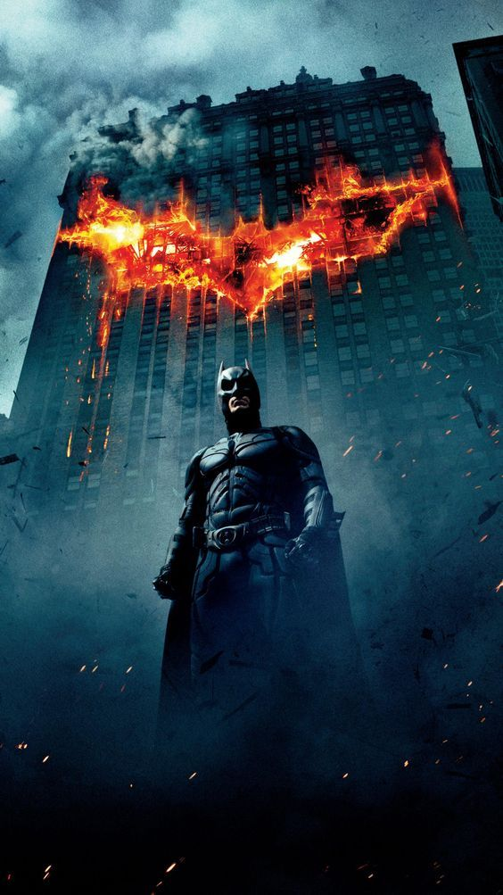
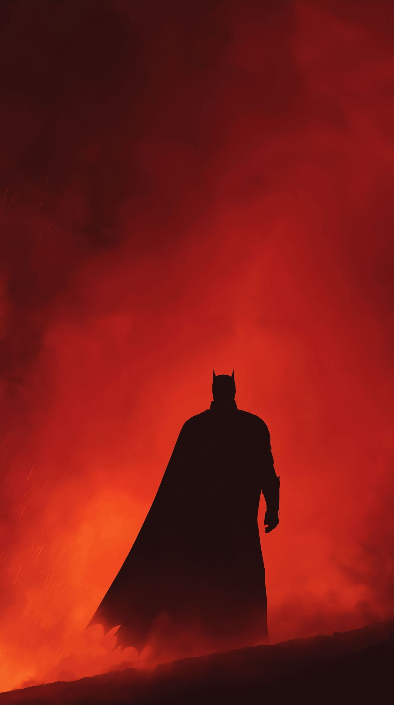
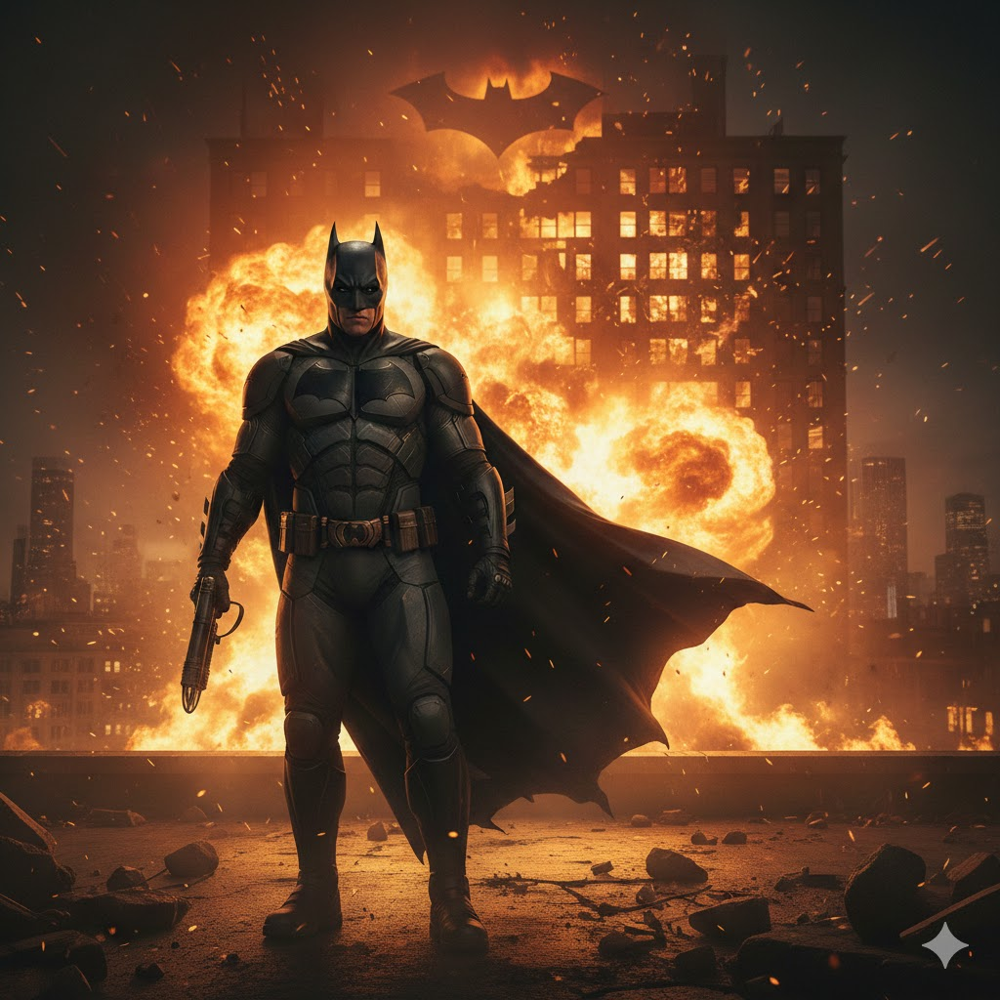
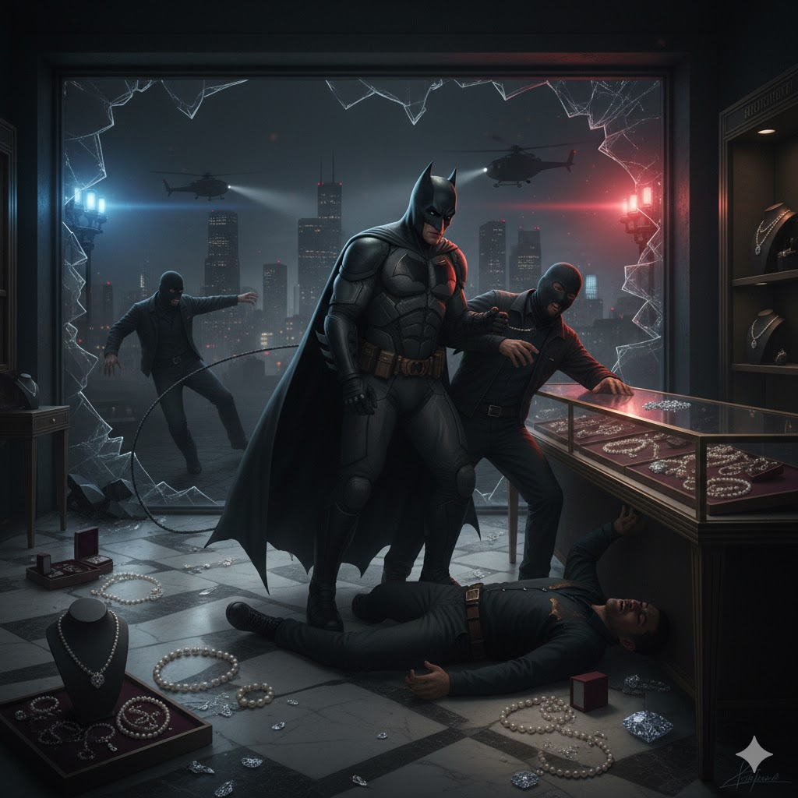
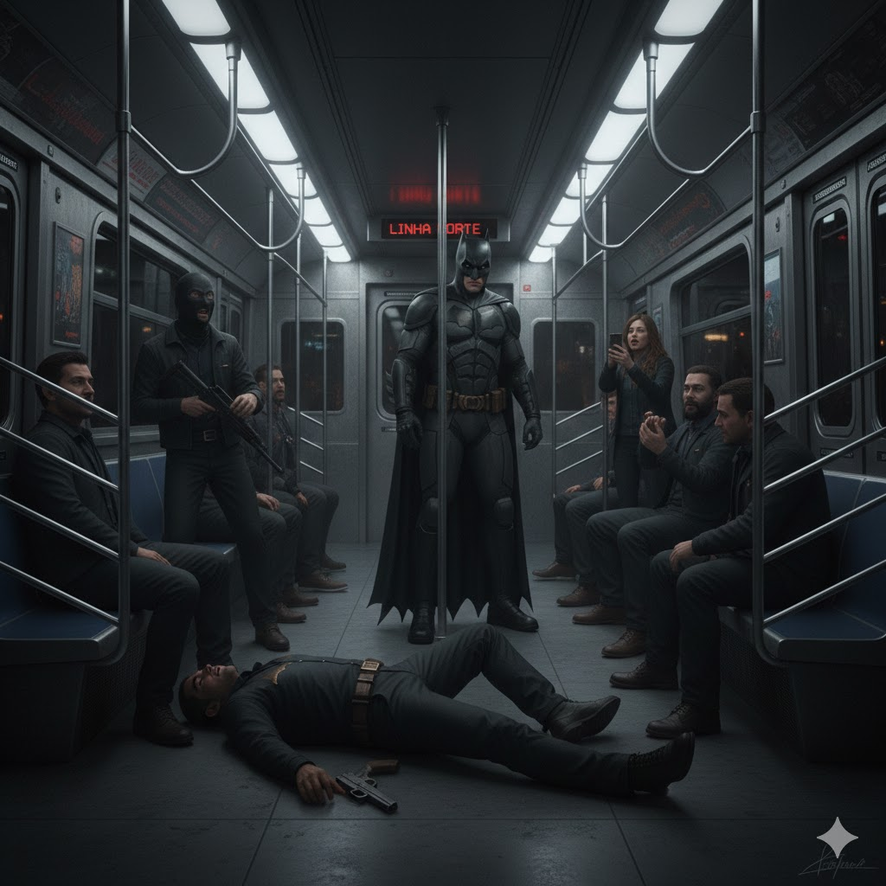
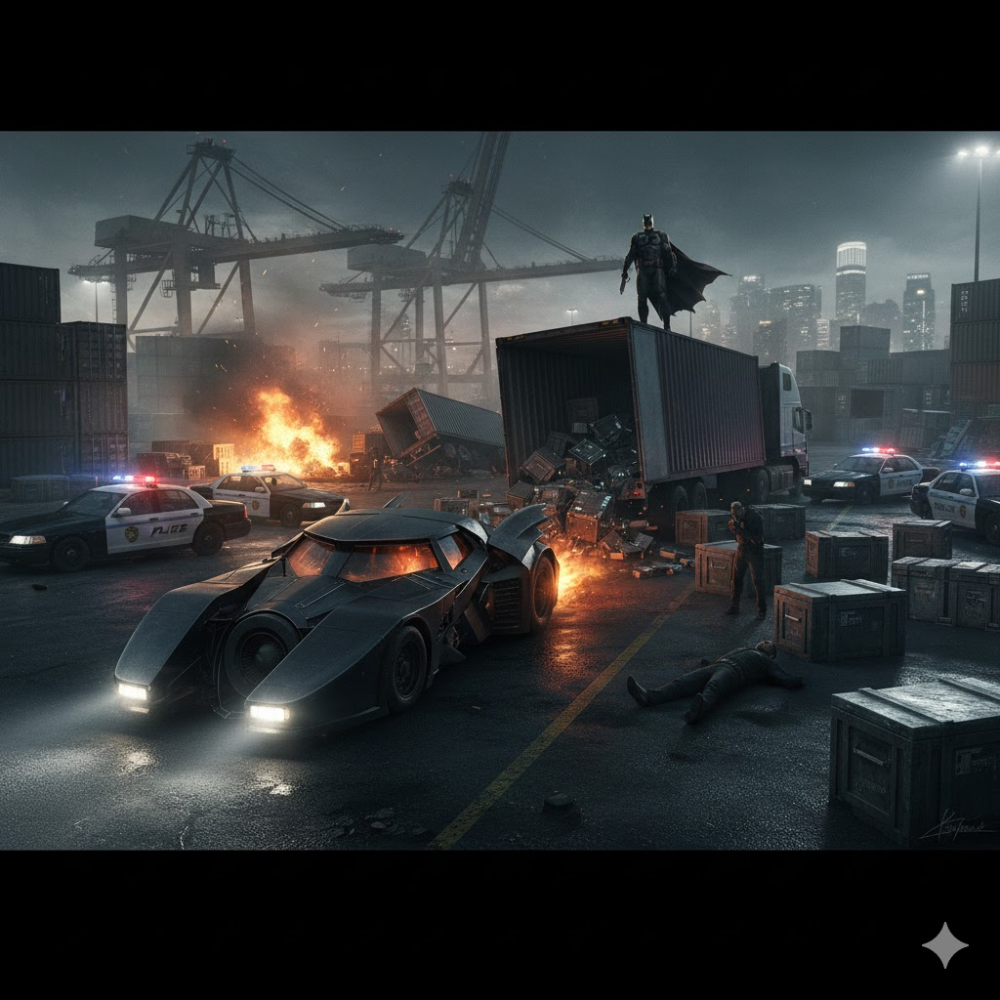

O Cavaleiro das Trevas
Salvador de Gotham
O maior dos morcegos
-ÚLTIMAS NOTÍCIAS-
NOTICIA 1
NOTICIA 2
Explosão no Centro de Gotham é Interrompida pelo Batman
Moradores de Gotham City viveram momentos de pânico na noite passada após uma série de explosões atingir prédios comerciais no distrito financeiro. Segundo o Departamento de Polícia de Gotham, os ataques teriam sido coordenados pelo criminoso conhecido como Coringa.
Testemunhas afirmam ter visto o Batman chegando ao local poucos minutos após a primeira detonação. “As luzes apagaram, e então ele simplesmente apareceu”, relatou um comerciante da região. A polícia confirmou que vários explosivos foram desarmados a tempo, evitando uma tragédia maior. O suspeito segue foragido.

Vigilante Interrompe Assalto em Gotham
Um assalto a uma joalheria no bairro Diamond District foi interrompido na noite passada por uma figura já conhecida da cidade: o Batman.
Segundo a polícia, quatro suspeitos foram encontrados imobilizados na cena do crime minutos após o disparo do alarme. Testemunhas relataram ter visto o vigilante deixando o local pelos telhados logo em seguida.
O Departamento de Polícia não comentou oficialmente a ação, mas confirmou que os criminosos foram presos sem resistência.

NOTICIA 3
NOTICIA 4
Batman Impede Ataque no Metrô de Gotham
Passageiros do metrô viveram momentos de tensão na noite de ontem quando homens armados tentaram tomar o controle de um trem na Linha Norte. Segundo a polícia, o grupo pretendia exigir resgate em troca da liberação dos passageiros.
Relatos indicam que o Batman surgiu dentro do vagão após uma queda repentina de energia. Em poucos minutos, os suspeitos foram imobilizados e entregues às autoridades na próxima estação. Nenhum passageiro ficou ferido.

Perseguição Noturna Termina com Prisões no Porto
Uma perseguição de alta velocidade movimentou o porto da cidade durante a madrugada. Caminhões suspeitos de transportar equipamentos roubados foram interceptados após a intervenção do Batman.
Testemunhas afirmam ter visto o Batmóvel bloqueando a saída principal do cais, forçando os criminosos a abandonar os veículos. A polícia confirmou a apreensão da carga e a prisão de três envolvidos. O vigilante deixou o local antes da chegada da imprensa.
